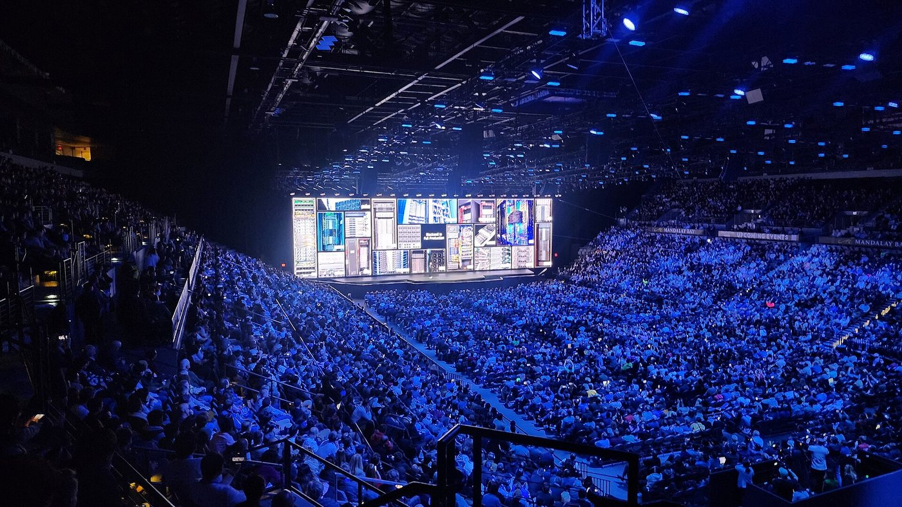
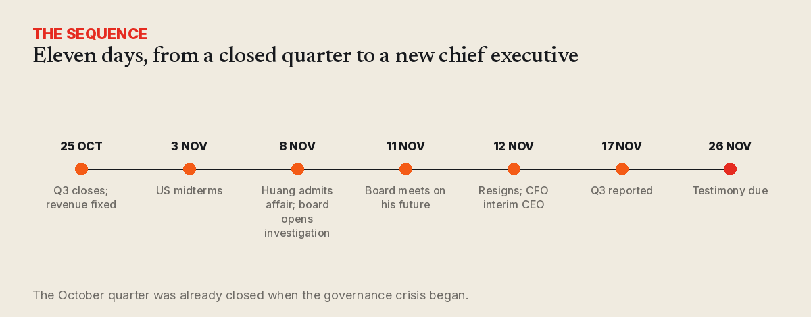
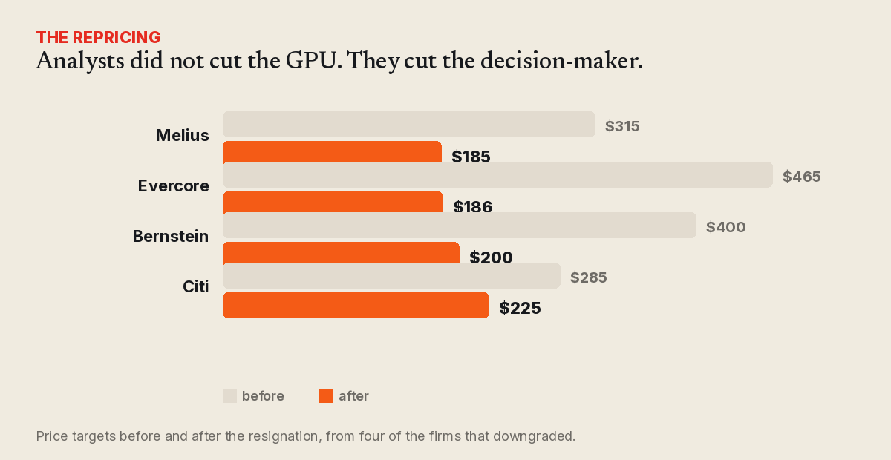
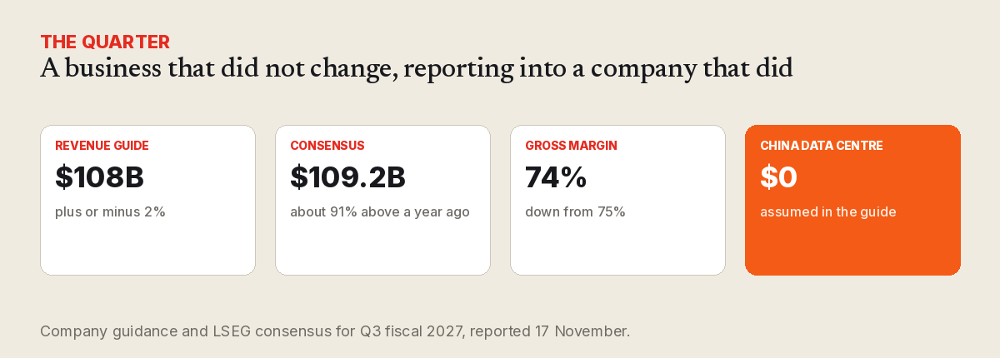

Nvidia's single point of failure
A four-trillion-dollar company lost a quarter of its value in a month because one man's judgement was the operating system. The engineering lesson is not about him.

On 12 November the board of Nvidia accepted the resignation of Jensen Huang as president, chief executive and director, effective immediately. He had run the company for 33 years. Colette Kress, the chief financial officer since 2013, was named interim chief executive; Harvey Jones became the board's first independent chair. The board says it will search for a permanent successor inside and outside the company.
Five days later Nvidia reports its third quarter. The quarter closed on 25 October. Nothing in that print will describe the company that publishes it, because the numbers were fixed before the board met, before the resignation, and before the news cycle that produced both.
What happened, and what is still only alleged
In late October the New York Times reported that Huang had a close relationship with a Chinese businesswoman, Alice Huang, an executive at Megaspeed, a Singapore-based company that had bought billions of dollars of Nvidia hardware. The paper reported that US intelligence officials assessed she had been gathering information for Beijing. NPR, which has covered the story closely, has said it could not independently confirm that reporting.
On 8 November Huang wrote to staff admitting he had been unfaithful to his wife and apologising to his family and the company. The board opened an independent investigation, retained Wachtell, Lipton, Rosen & Katz, and said it had "no reason to believe" that national security or Nvidia secrets had been compromised. The FBI is running its own inquiry. On 11 November further reporting described a second relationship, with an Nvidia vice-president who reported to him; Reuters later reported a third, with an unnamed employee. Shares fell more than 9% after hours on the report that the board was preparing to remove him.
Beijing has rejected the spying allegations as a smear. Huang has agreed to testify before Congress before 26 November. Nobody has published a finding that secrets actually moved, and this piece is not an adjudication of any of it.

What the market actually repriced
Nvidia fell as much as 16% on the day, closed down 4.3%, and at the low had given up roughly $500–600 billion of market value — briefly the largest single-day loss of value any stock has recorded. It closed barely above $4 trillion, having been the most valuable company in the world weeks earlier, and is now about 27% below its October peak.
At least seven firms downgraded it in a week. The targets tell you what they were pricing. Melius went from $315 to $185, Evercore from $465 to $186, Bernstein from $400 to $200, Citi from $285 to $225. Dan Ives put it plainly: $300 a share with Huang, $225 without him.
None of those notes argued that the GPU got worse. Bernstein's Stacy Rasgon wrote that the fundamentals are "clearly still intact with numbers that remain massive". The thing being repriced was not silicon. It was judgement.

There was no number two
Evercore's note names the structural problem in one clause: Nvidia has "no obvious succession plan or number 2 operational executive". Reuters describes a chief executive with roughly 60 direct reports who personally arbitraged which customers got allocation, which neoclouds — CoreWeave, Nebius — got equity and support, and which bets the roadmap took. That is not a management style. It is an architecture, and it had one node.
The comparison everyone reached for was Apple, which is the wrong comparison in one important way: Apple spent years building a successor before it needed one. Questar's Richard Reyle made the point on CNBC — Jobs groomed Cook, and Nvidia has no equivalent in place. The internal candidates named by analysts, Kress and Ian Buck, are credible operators; neither has been positioned as the strategy.
Why this matters if you build on rented compute
Most teams reading this do not own a data centre. They rent inference, or they run small models on hardware they already have. Either way, the lesson is about concentration, and concentration is not only a supply question.
If the roadmap, the allocation policy and the capital strategy all run through one person's taste, then your supplier's future is a bet on that person. That is a risk you can measure — and mostly, teams do not. Three questions are worth answering this week: can you move your inference to a second provider in a day, or is that a quarter of work? Is your evaluation set portable, or is it tuned to one model's quirks? And if allocation tightened, what happens to your unit economics?
This is the argument we have made in other forms — for static sites, for offline-first software, for CPU-only defaults. Portability is not nostalgia. It is the hedge you buy before you need it.
What to watch on 17 November
The print itself is history. The company guided to $108 billion, plus or minus 2%; LSEG consensus sits near $109.2 billion, about 91% above a year ago, with adjusted earnings near $2.48 a share. Gross margin was guided to 74%, down from 75%, with memory costs pressing, and management has warned of 71–72% in the following quarter. China data-centre compute is assumed at zero, as it has been for three quarters.
So the numbers to read are the Q4 guide and the margin, not the revenue line. A transitional management team guiding cautiously will be indistinguishable, on the day, from the first sign of a slower build-out. That ambiguity is the cost of having no second-in-command to explain the business while the first one leaves.

What this piece is not. It is not a finding on the allegations, which are contested, under investigation, and denied by Beijing. It is not a verdict on a person's private life. It is a reading of a documented governance failure: a four-trillion-dollar company, the central supplier of the AI build-out, with no succession plan and no second operator — and a market that discovered both in eleven days.
The GPU is still the best product in its market, and the demand behind it has not moved. What moved is the assumption that the company and the person were the same thing. For 33 years that assumption was the strategy. On 12 November it became the risk.
Sources
- Nvidia, CEO transition announcement, 12 November 2026.
- Reuters, Huang steps down: the hands-on kingmaker, and on the AI trade.
- CNBC, analyst downgrades and what his exit means for AI.
- AP, what we know and do not know.
- BBC, Nvidia hires Wachtell Lipton.
- NPR, Huang steps down.
- The Guardian, timeline.
- LSEG consensus and company guidance as reported in Q3 FY2027 previews.